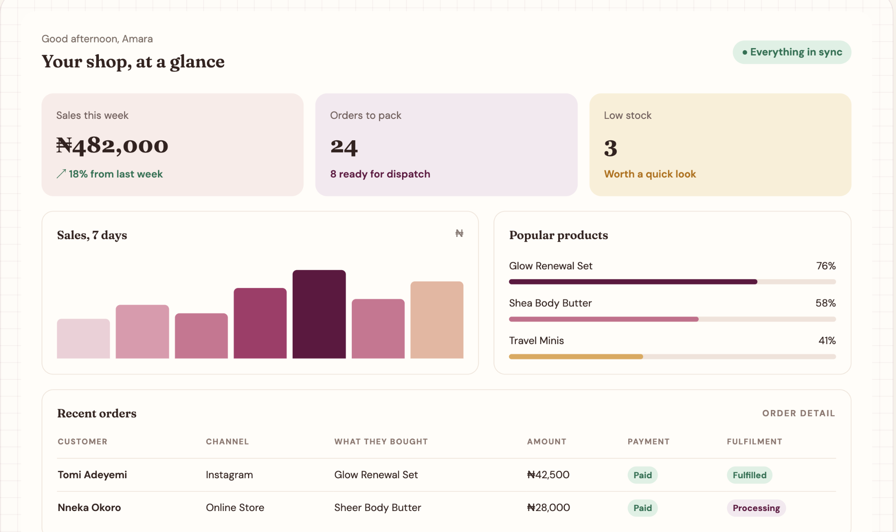
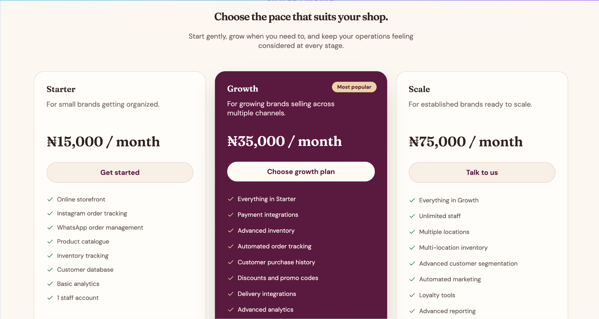

Cora × Nubian Skin
Recovering an at-risk customer before renewal.
Cora is the product. Nubian Skin is the customer account. The scenario is a training simulation, not a real customer engagement.
Meet Cora before meeting the account.
Cora is a business management system for beauty businesses. These screens show the product context used for the Nubian Skin simulation.


Who is Nubian Skin?
I established who the customer was, what they bought Cora to achieve, and who needed to be involved.
A beauty store using Cora to manage orders, inventory, payments and fulfilment across its sales channels. Six months into the Growth plan, the original business case was to reduce manual order handling, improve inventory accuracy and give the team one place to manage customer operations.
Champion perspective, product expectations and customer priorities.
Technical context, configuration and workflow reliability.
Operational reality, manual work and adoption behaviour.
Enough evidence to intervene.
The account was still active, but several health signals were deteriorating simultaneously.
The health score was 48/100. Weekly active users had moved from 7/8 to 4/8; orders through Cora from 90% to 62%; inventory discrepancies from 2 to 7 per month; support tickets from 3 to 8; and NPS from 8/10 to 5/10.
Separate the symptom from the cause.
Before recommending a solution, I investigated whether the problem was technical, operational, behavioural or business-related.
Could the workflow be unreliable?
Review tickets, error patterns, affected workflows and configuration changes.
Where does the team leave Cora?
Follow a real order through fulfilment and identify manual workarounds.
Is the product still aligned?
Check role changes, expectations, priorities and the original business case.
Fix reliability before asking people to trust the workflow again.
The blocker came before the training.
The working diagnosis was an unreliable workflow that pushed the team back to spreadsheets and weakened product trust.
The recovery therefore starts with reliability and validation, then moves into behaviour change.
A 90-day recovery in three moves.
The first 30 days focused on fixing the blocker and creating a reliable baseline for recovery; the next phase rebuilt adoption.
Stabilise
- Align stakeholders
- Escalate and communicate blocker
- Fix and validate workflow
- Establish baseline
Rebuild adoption
- Re-engage users
- Track WAU and order share
- Reduce manual work
- Restore customer cadence
Demonstrate value
- Review operational outcomes
- Show efficiency gains
- Strengthen experience signals
- Prepare renewal evidence
Measure the recovery where the business feels it.
I measured recovery through behaviour change and business outcomes rather than logins alone.
The goal isn't a green Health Score. It is a customer who can confidently say: “Cora is helping us run the business better.”